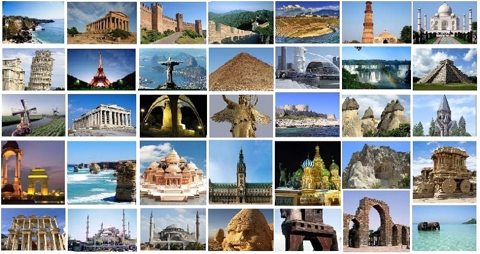

A Historical Places of the World
A historical place is basically any locality, structure or area that contributes to a comprehension and appreciation of a society’s history and cultures. It, therefore, has three major elements; it is a geographical place meaning it can be a house, structure, area or site, has associated historic values as well as the significance and a connection to a community, person or group of people. That is why it forms one of the most precious assets to the concerned persons. Historical environments tell visitors and future generations how various people shaped the society and landscape.In simple words it is basically any locality, structure or area that contributes to a comprehension and appreciation of a society’s history and cultures and some of the countries historical places are gives as menu ,just click to explore it
